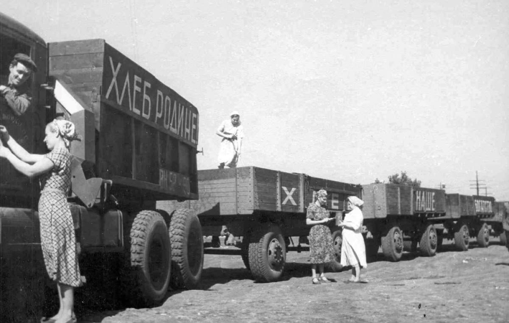
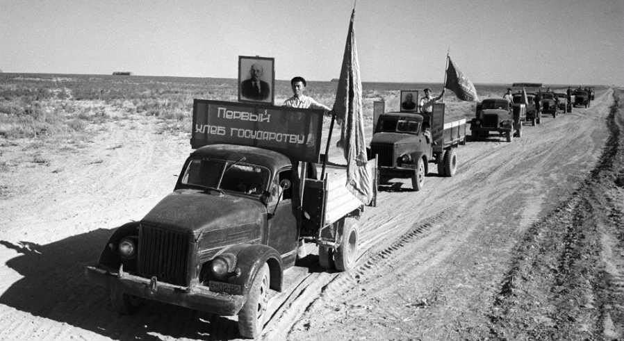
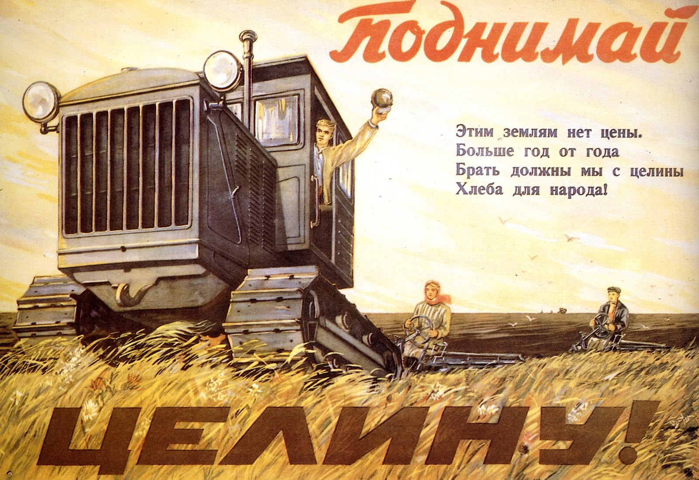
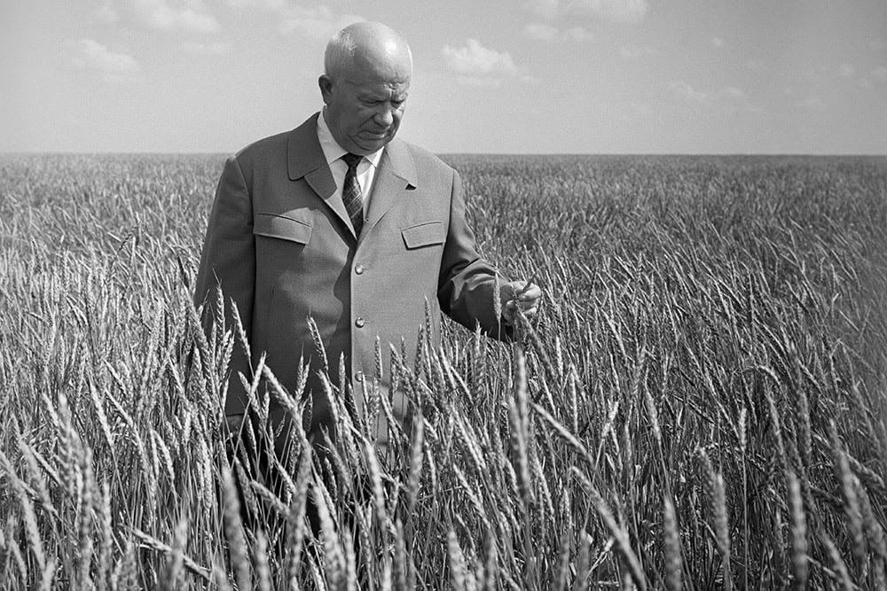
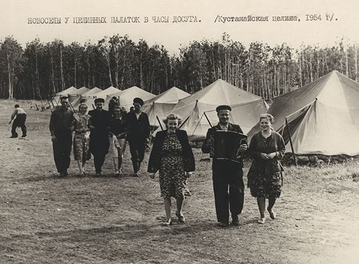
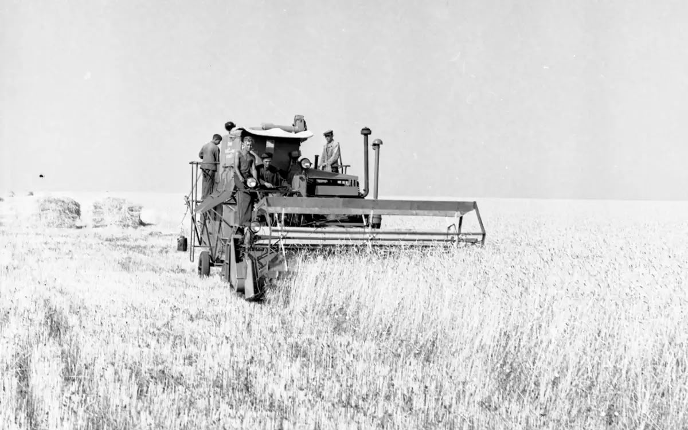
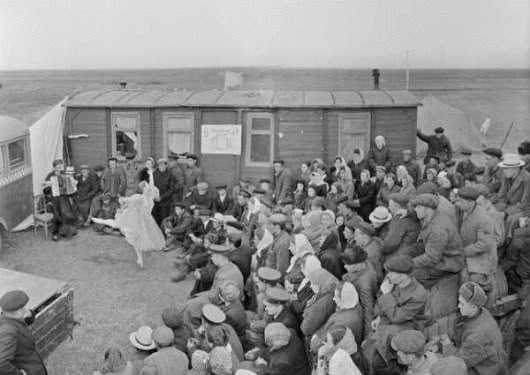

1954 ЖЫЛ
Зерттеу сұрағы: Тың және тыңайған жерлерді игеру саясаты Қазақстанға қалай әсер етті?







Тапсырма 1. Неліктен КСРО басшылығы астық проблемасын дәл осы Қазақстанның солтүстік аймақтарын игеру арқылы шешкісі келді?